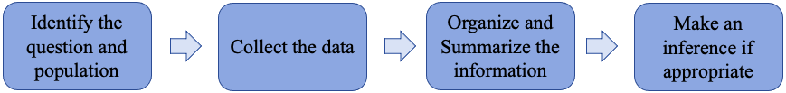
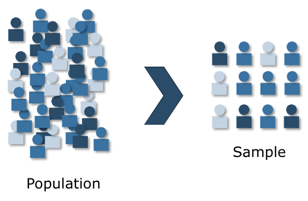
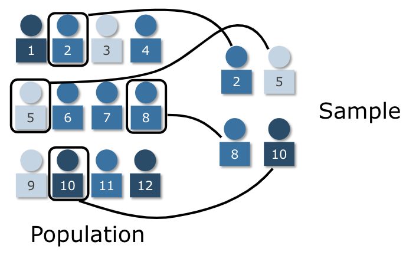
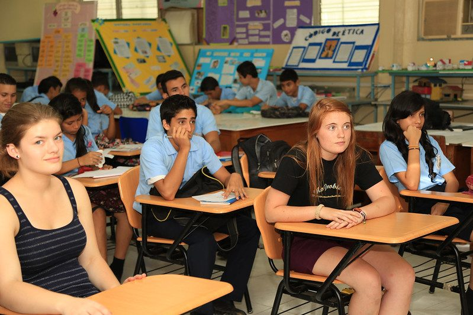
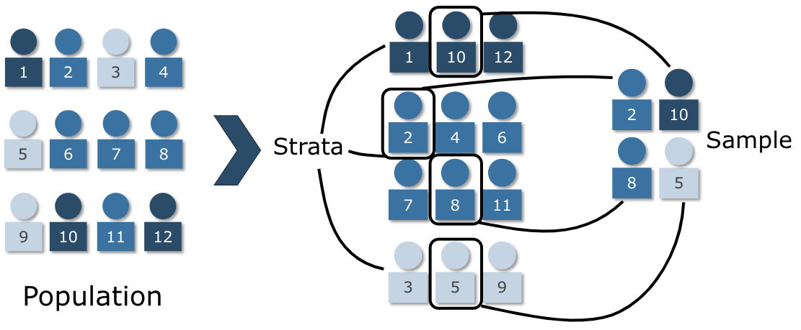
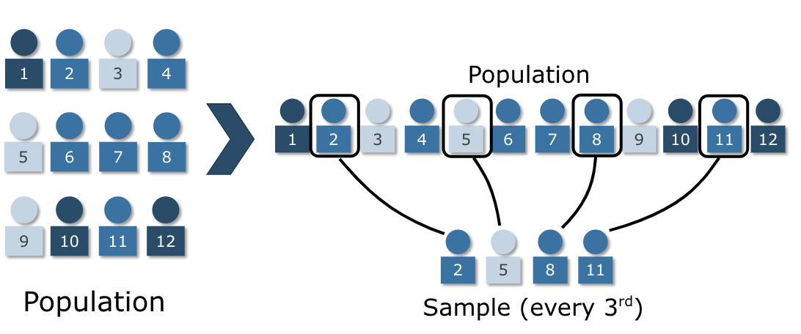
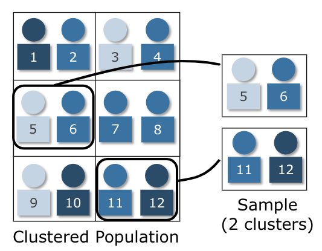

Section 1.2: Sampling Methods
Learning Objectives
1.Identify and differentiate between census and sampling.
2.Identify simple random sampling.
3.Identify stratified sampling.
4.Identify systematic sampling.
5.Identify cluster sampling.
6.Identify convenience sampling and self-selected surveys.

Figure 1.5: The process of statistics emphasizing step 2.
This section focuses on the collection of data, step 2 in the process of statistics. To begin with, data can be found from many sources, including:
•a census (if this is possible)
•existing sources (previously collected data, websites, etc.)
•survey sampling (creating, administering, and analyzing surveys)
•designed experiments (compare results for groups under different conditions)
Recall that a census is a list of each individual in the population along with a measurement or observation. As we discussed in section 1.1 it is not always feasible to conduct a census. For instance, collecting information from every graduating high school senior in the United States would require an enormous effort. When conducting a census is too difficult, we instead use a sample to represent the population. If we do a good job selecting the sampled individuals, the sample will mimic the characteristics of the population, and so the results will be good approximations for the population parameters. In this section we discuss good methods for sampling.
Goal: Throughout this course, our goal is to obtain a representative sample that reflects the characteristics of the larger population.

Figure 1.6: We use sampling to represent a large population with a smaller subset. (Image credit Dan Kernler licensed under Creative Commons License 3.0) (opens in a new tab)
The most widely used and simplest sampling technique is the simple random sample. If the whole population has size N, then we select a sample of size n, where n is generally much smaller than N. A list of all individuals in the population is called a Frame. With simple random sampling, we randomly choose individuals from the frame. The important thing is that to be a simple random sample, each individual from the population must have an equal chance of being selected for inclusion in the sample, and each group of size n has an equal chance of being selected. That sounds far more complicated than it really is. You have probably used simple random sampling and not even been aware of it. Simple random sampling is like drawing names from a hat.
Definition 1
Simple Random Sample – A sample of size n taken from a population of size N is a simple random sample if every possible sample of size n has an equal chance of being selected.
Okay, so how is that simple? Consider this example. Suppose that we have 12 students, numbered from 1 to 12 (see figure 1.7 below). The frame is a list of the names of all 12 students in the population. We write the numbers of all 12 students on pieces of paper and put them into a hat. Then we randomly draw 4 papers from the hat and look at the numbers. Let’s say that we randomly selected student numbers 2, 5, 8, and 10. Each student has an equal chance of being selected, and every group of 4 students has an equal chance of being selected, so this is a simple random sample.

Figure 1.7: Image of a simple random sample. (Image credit Dan Kernler licensed
under Creative Commons License 3.0) (opens in a new tab)

Important Point!
Most statistical tests we use in this course assume we are using simple random sampling techniques.
Example 1: How to Create a Simple Random Sample
Describe how you could create a simple random sample of 4 students from a class of 46 students.
Solution: One option would be to have each student write their name on a slip of paper and place the papers in a hat. Then draw 4 of them from a hat. The names drawn are the students used in the sample.
Another option would be to number the students from 1 to 46. Then use a random number generator on a calculator, website, or using StatCrunch to generate 4 numbers between 1 and 46. Choose the students that correspond to the numbers to include in the sample.
Example 2: Determine if the sample is a simple random sample
I want to select 4 students out of 46 in my statistics class. Determine if the method will create a simple random sample.
a.Select the first 4 students who show up to class.
b.Select the first 4 students in the third row of desks.
c.Select the first seat in each of the first four rows.
d.Select 4 students whose names I know.

"IMG_8312.jpg (opens in a new tab)" by AFS-USA Intercultural Programs (opens in a new tab) is licensed under CC BY 2.0 (opens in a new tab).
Solution:
a.Select the first 4 students who show up to class. This is not a simple random sample. Students who show up later have no chance to be selected.
b.Select the first 4 students in the third row of desks. This is not a simple random sample. Students in other rows have no chance at being selected.
c.Select the first seat in each of the first four rows. This is not a random sample. Students who do not sit in the front row of desks have no chance at being selected.
d.Select 4 students whose names I know. This is not a random sample. Students whose names I do not yet know have no chance at being selected.
Although simple random sampling is the most important of the sampling techniques, there are a few others that are worth discussing. They are stratified sampling, cluster sampling, systematic sampling, and convenience sampling.
Definition 2
Stratified sampling – Divide the population into non-overlapping groups, called strata, where the strata are determined by common traits. Then use a proportional simple random sample on each stratum.
For example, strata might be gender, ethnicity, education level, etc. You might use stratified sampling when you want to make sure that you include some individuals from different groups.

Figure 1.8: Diagram of stratified sampling (Image credit Dan Kernler, licensed under
Creative Commons License 3.0) (opens in a new tab)
Returning to our previous example, see figure 1.8, let the strata be the type of student- evening, daytime, or online. Let dark blue represent an evening student, the medium blue represent daytime students, and light blue represent online students. If we want to obtain data from all three strata, we first separate them, then use a simple random sample on each of the strata.
In this case, evening students make up 25% of the population, so we randomly select 1 of the 3 evening students for our sample. That one selected student will be 1 out of 4, or 25% of the sample. So, the percent of evening students in the population matches the percent of evening students in the sample.
Similarly, daytime students make up 50% of the population, so 50% of the sample should be made up of daytime students. That means we randomly select 2 from the 6 daytime students to include. Again, the percent of daytime students in the population matches the percent of daytime students in the sample.
Finally, the Online students make up 25% of the population, and so 25% of the sample (1 out of the 3 online students) is online students.
Using stratified sampling is appropriate if you think subgroups of the population might have differing opinions, and you want to make sure you include all views. In the example above, if the question was about feelings of safety on campus, making sure you include some daytime students and some evening students is appropriate, because they may have different experiences that you want to include. If you only obtained responses from daytime students, they may feel safer because they attend in daylight. Perhaps evening students feel less safe but were not included in the survey. This could lead you to an incorrect conclusion.
On the other hand, if there is no reason to think that the strata would have different views, using a stratified sample might not be necessary. If you ask students about their favorite food, there is no reason to think that being a daytime, evening, or online student would be a factor.
Example 3: Examples of Stratified Sampling
a.You wish to survey students but feel that gender identity could be a factor in the responses. How do you proceed?
b.You wish to survey people in your area about attitude toward police treatment but feel that race and ethnicity could be a factor. How do you proceed?
Solution:
a.If you were concerned about a difference in opinion due to gender identification, you could divide the population into strata based on gender identity. This would allow you to compare the data from each gender identification subgroup. Are the results between the gender identities different?
b.If you want to know how residents feel toward the police, you could divide the population into strata based on race or ethnicity. Then you could sample from those groups proportionally. Are there differences in attitudes toward police among different ethnicities?
If it is not possible to create a frame for the data, you can use systematic sampling. In this method we choose a starting point, then we follow a pattern, such as selecting every 100th visitor to a website. Since we don’t know who might eventually visit the site, we can’t make a frame. So, we just include data from every 100th visitor systematically.
Definition 3
Systematic sampling – A systematic sample is obtained by selecting a random starting point, then including every kth individual thereafter.
In our example, if we were to put the 12 students in order, we can select every 3rd student starting from a random place between 1 and 3. For this simple example, say we start at the 2nd student and choose every 3rd student after that. See figure 1.9 below.

Figure 1.9: Diagram of systematic sampling. (Image credit Dan Kernler, licensed under
Creative Commons License 3.0) (opens in a new tab)
We would include student numbers 2, 5, 8, and 11. Note that this sample does not include any of the dark blue students. If we had a larger population and sample size, we would expect to have some representation from all groups.
Example 4: Other Examples of Systematic Sampling
Some other examples of systematic sampling would be:
•Sampling every 10th person to call a tutoring center.
•Sampling every 30th person to register to vote.
•Sampling every 5th student on a class roster.
•Sampling every 25th entry in a bicycle race.
Another useful sampling technique is cluster sampling. Cluster sampling is similar to stratified sampling, and they are often confused. Stratified sampling divides the population into groups, then randomly selects some individuals from those groups. Cluster sampling uses naturally divided groups, then randomly selects some of those groups to include in the sample. Every individual in the selected cluster is included in the sample.
Cluster sampling is useful when you have groups that are already formed, for instance classes at your college. An administrator might want to give a survey to the student population. One easy way to do that is to go to a random selection of classes and give the survey. Here, the classes are the clusters. Each student that is in a selected class takes the survey, while those in other clusters do not.
Definition 4
Cluster sampling – Divide the population into clusters, then randomly select some of the clusters to include in the sample. Every individual in the selected cluster is included.
If our 12 students have been paired up, perhaps for a group project, then we have clusters created. We have 6 clusters of 2 students apiece. If we randomly select two clusters, we have a sample of 4 students. Here we randomly selected the clusters including student numbers 5, 6, 11, and 12. See figure 1.10.

Figure 1.10: Diagram of a cluster sample. (Image credit Dan Kernler, licensed
under Creative Commons License 3.0) (opens in a new tab)
Example 5: An Example of Cluster Sampling
A college wants to survey students about their feelings about parking and public transportation. They need at least 300 responses from students for the survey to be meaningful. Describe how a cluster sample could be used.
Solution:Assume that classes have an average of 30 students enrolled. Using the class schedule, randomly select ten courses. Visit those classes and survey all students regarding satisfaction with public transportation and/or parking on campus. This approach will result in about 10 classes × 30 students=300 students included in the sample.
Example 6: An Example of Cluster Sampling
A quality control manager wants to make sure that the electronics sent to stores are in working order. The items are shipped in boxes of 12 devices. The manager determines that a sample of around 240 devices will be sufficient. Describe how a cluster sample could be used.
Solution:Since a sample of 240 electronics is desired, randomly select 20 boxes of electronics and test all the devices in each box. That will result in 20×12=240 electronic devices tested. In this case, each box of 12 is a cluster.
Sometimes we don’t have the time or energy to conduct a scientifically sound survey or experiment. In those cases, we can use what we refer to as a convenience sample. A convenience sample is like asking your friends their opinion or asking classmates if they have seen a particular movie. You are collecting data, but you may not be getting a representative sample. Sure, it is convenient, but the results will not be reliable.
For example, if I were to ask my statistics class students if they intend to transfer, that would be convenient. It would also be likely that 100% would intend to transfer. One of the requirements for transfer is to take a quantitative reasoning course, which a statistics course satisfies. But there may be other students who don’t intend to transfer and so do not enroll in statistics. I have not included those students in my data collection. This is a biased sample, meaning that my sample overcounted some important traits. The problem is that the people who it is convenient for me to sample do not fairly represent the whole population.
A particularly tricky convenience sample is called a self-selected survey. These are samples where the individuals decide whether to participate. Any email or online survey that you see is self-selected, meaning that only the individuals who care about the topic are likely to participate. And that means that you only obtain information from the extremes. Often response rates to online surveys are less than 10%, meaning that 90% of people did not fill out the survey. Only the 10% who had the strongest opinions were included. In general, you should always view convenience samples and self-selected surveys with skepticism.
Definition 5
Convenience sample – A convenience sample uses easily obtained data. This data can be obtained by surveying people you know or can easily find, or taking information from individuals who offer it.
Self-selected survey – A convenience sample where individuals decide whether to include themselves in the survey (email, online, and phone surveys are self-selected).
Example 7: Identify the Sampling Technique
A campus Math Tutoring Center wishes to survey its students regarding the effectiveness of the tutoring they have received. Several possible techniques are listed. Classify each as a simple random sample, a stratified sample, a systematic sample, a cluster sample, or a convenience sample.
a.Create a list of all students who have attended tutoring at the center. Divide the students by the class they received tutoring in (Algebra, Statistics, Calculus, etc.). Then select simple random samples from each group.
b.Randomly select 10 days from the semester and survey all students who attended tutoring on those days.
c.Create a list of all students who have attended tutoring at the center. Randomly select students from the list to survey.
d.Send an email to all students who have received tutoring and ask them to complete the survey.
e.Create a list of all students who have attended tutoring at the center. Number the students starting with 1, then choose a random number between 1 and 49, select that student and every 50th student that follows on the list.
Solution:
a.Create a list of all students who have attended tutoring at the center. Divide the students by the class they received tutoring in (Algebra, Statistics, Calculus, etc.). Then select simple random samples from each group.
This is a stratified sample. The strata are the classes Algebra, Statistics, Calculus, etc.
b.Randomly select 10 days from the semester and survey all students who attended tutoring on those days.
Photo by Mars Sector-6 (opens in a new tab) on Unsplash (opens in a new tab)
This is a cluster sample. The clusters are the days that were selected. Every student who received tutoring on the selected days is included.
c.Create a list of all students who have attended tutoring at the center. Randomly select students from the list to survey.
This is a simple random sample.
d.Send an email to all students who have received tutoring and ask them to complete the survey.
This is a convenience sample. More specifically, it is a self-selected survey. Only students with strong opinions about their experience will likely complete the survey. It is likely that the results will not be reliable.
e.Create a list of all students who have attended tutoring at the center. Number the students starting with 1, then choose a random number between 1 and 49, select that student and every 50th student that follows on the list.
This is a systematic sample.